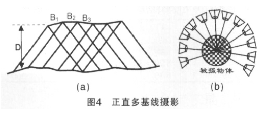
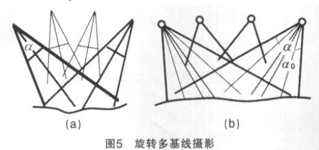
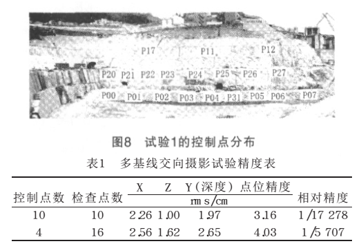
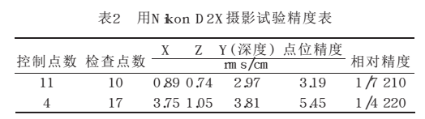
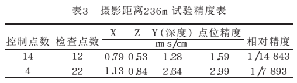
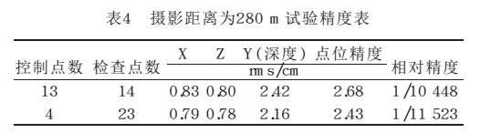

论文笔记 — 张祖勋, 杨生春, 张剑清, 等. 多基线-数字近景摄影测量
1. 多基线近景摄影测量
张祖勋, 杨生春, 张剑清, 等. 多基线-数字近景摄影测量[J]. 地理空间信息, 2007(01): 1–4.
这篇文章是张祖勋院士发表的一片介绍多视近景摄影测量概念和应用的文章，偏介绍和综述，但也有实际的案例介绍多基线摄影测量的应用和精度。
多基线摄影测量概念是相对于单基线摄影测量提出的，对于传统的航空摄影测量，为了平衡测量精度和测量范围与测量测量速度（与拍摄成本密切相关），一般要求航向重叠60%，旁向重叠20%。这也使得对于大多数同名点来说，只能在2视图像中被观测到，因此大部分点只需要单基线摄影测量（或者在计算机视觉领域中被称为两视几何）就可以解决，求交会点无需平差。
但是对于地面近景摄影测量以及无人机摄影测量来讲，由于拍摄相片距离较近，且通常需要拍摄角度范围更广（例如360°拍摄）因此，图像间很难保证一定的重叠度。同时由于相片间的夹角更大，因此其重叠度计算也更加复杂，且两视重建的二义性也会更加显著。因此对于近景摄影测量以及无人机航拍而言，通常会拍摄更加密集的影像，这也使得三维空间中的某个点通常会在多张图像中出现，这也就是多基线近景摄影测量要解决的问题（可以类比于计算机视觉中的 Multi-view Stereo）。
多基线相对于多基线，由于存在同名点在不同时间的传递，其最大交会角可以远超过单基线摄影测量，这也提高了深度（高程）的求解精度。同时由于相邻两视图像夹角更小，物体变形相对更小，可以达到更加准确的同名点自动匹配结果，也提高了自动重建的准确性。
文章对多基线摄影测量进行分类，分类标准是照片的获取方式
多基线正直摄影
对于这一类，与传统航摄类似，还是利用广角相机，构成立体相对拍摄，但是重叠度更高，通常在80%以上，拍摄的轨迹也较为规整，具体的包括平行多基线和回转多基线摄影两种：
 多基线交向摄影
这一类这是对于焦距较长，为了使交会角不小于20°而使用的方式，也分为两种具体类型：简单多基线和旋转多基线。后一种是指在一个摄站点，旋转相机对被摄物体进行多次拍照，获取多张影像，相邻影像不小于50%，这种摄影方式的具体可以参考上一篇文章中提到的黄山博士的期刊论文1和博士论文2 。

对于多基线摄影测量的后期的数据处理而言，则与计算机视觉中的SFM方法类似，完整全自动的自由网平差，同时在平差时必须引入内参的改正项，实现自检校自由网平差。同时后续实现也证明该方法精度较高，完全能够满足摄影测量的要求。下面是一些试验结果：
实验一：柯达相机拍摄试验精度↓
 实验二：尼康相机拍摄试验精度↓
 实验三：不同距离佳能相机拍摄试验精度↓
 